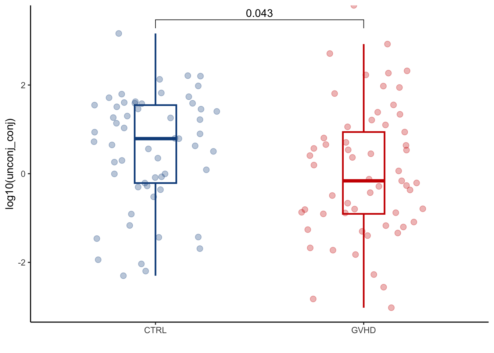

Chapter 3 Create the bile acid pools (figure 4, supplementary figure 6,8)
3.1 Create BA pools first for peri-GVHD-onset timepoint
later<- cohort_BAS %>%filter(later=="Y") %>%
filter(ursodiol=="Y") %>%
select(sampleid, GI_GVHD) %>%
left_join(conc_all_filtered)
#prep dataset prepping each BA depending on its classifications
later_pools<-later %>%
gather("bile_acid", "value", names(.)[5]:names(.)[ncol(.)]) %>%
left_join(ba_families) %>%
mutate(primary_pool=ifelse(prim_vs_sec=="Primary", value, 0)) %>%
mutate(secondary_pool=ifelse(prim_vs_sec=="Secondary", value, 0)) %>%
mutate(sulfated_pool=ifelse(sulfated=="Y", value, 0)) %>%
mutate(conjugated_pool=ifelse(amidated=="Y" & sulfated=="N", value, 0)) %>%
mutate(unconjugated_pool=ifelse(amidated=="N" & sulfated=="N", value, 0)) %>%
mutate(secondary_nonUDCA=ifelse(prim_vs_sec=="Secondary" & udca=="N", value, 0)) %>%
mutate(total_BAs=value) %>%
mutate(total_nonUDCA_pool=ifelse(udca=="N", value, 0)) %>%
mutate(glycine_pool=ifelse(glycine=="Y" & sulfated=="N", value, 0)) %>%
mutate(taurine_pool=ifelse(taurine=="Y" & sulfated=="N", value, 0)) %>%
mutate(taurine_SBA_pool=ifelse(taurine=="Y" & prim_vs_sec=="Secondary" & sulfated=="N", value, 0)) %>%
mutate(taurine_PBA_pool=ifelse(taurine=="Y" & prim_vs_sec=="Primary" & sulfated=="N", value, 0)) %>%
mutate(glycine_SBA_pool=ifelse(glycine=="Y"& prim_vs_sec=="Secondary" & sulfated=="N", value, 0)) %>%
mutate(glycine_PBA_pool=ifelse(glycine=="Y" &prim_vs_sec=="Primary"& sulfated=="N", value, 0)) %>%
select(-colnames(ba_families), -value)
#replace NAs with 0 to be able to add sums
later_pools[is.na(later_pools)]<-0
later_pools_final<-later_pools %>%
#gather("bile_acid", "value", names(.)[2]:names(.)[ncol(.)]) %>%
#summarise(sum_group=sum(value))
group_by(sampleid) %>%
summarise(across(where(is.numeric), sum))3.1.1 Plot: TBAs (total_BAs), PBAs (primary_pool), SBAs (secondary_pool), nonUDCA SBAs (secondary_nonUDCA), conjugated (conjugated_pool), unconjugated (unconjugated_pool), sulfated (sulfated_pool)
later_pools_final %>%
left_join(cohort_BAS) %>%
mutate(GI_GVHD=ifelse(GI_GVHD=="Y", "GVHD", "CTRL")) %>%
mutate(sp_ratio=secondary_pool/primary_pool) %>%
mutate(sp_nonUDCA_ratio=secondary_nonUDCA/primary_pool) %>%
mutate(unconj_conj=unconjugated_pool/conjugated_pool) %>%
ggplot(aes(x=GI_GVHD, y=log10(unconj_conj), colour=GI_GVHD))+
geom_boxplot(width=0.2, lwd=0.8, outlier.shape = NA) +
geom_jitter(width=0.3, alpha=0.3, size=2.5)+
ylab("log10(unconj_conj)")+
xlab("")+
theme_classic()+
stat_compare_means(comparisons=list(c("CTRL", "GVHD")),
method="wilcox.test",
correct=FALSE)+
scale_color_manual(values=c("dodgerblue4", "red3"))+
theme(legend.position="none")
3.1.2 Create pies
dataset_pre<-later_pools_final %>%
gather("BA_pool", "value", names(.)[2]:names(.)[ncol(.)]) %>%
left_join(cohort_BAS %>%
select(sampleid, GI_GVHD, later, ursodiol)) %>%
filter(later=="Y") %>%
filter(ursodiol=="Y") %>%
select(-ursodiol, -later) %>%
group_by(GI_GVHD, BA_pool) %>%
summarise(ave_pool=ave(value)) %>% slice(1)
dataset_pre2<-dataset_pre %>%
#filter(BA_pool=="primary_pool"|BA_pool=="secondary_nonUDCA") %>% #to evaluate nonUDCA secondary and primary polls
#filter(BA_pool=="primary_pool"|BA_pool=="secondary_pool") %>% #to evaluate total secondary
filter(BA_pool=="glycine_pool"|BA_pool=="taurine_pool"|BA_pool=="sulfated_pool"|BA_pool=="unconjugated_pool") %>%
rename(group=BA_pool) %>%
rename(value=ave_pool) %>%
ungroup() %>%
group_by(GI_GVHD) %>%
mutate(sum_value=sum(value)) %>%
mutate(perc=value/sum_value) %>%
mutate(labels = scales::percent(perc)) %>%
ungroup()
#only run below when evaluating glycine/taurine conjugation as wel
#define order of piechart for glycine/taurin conjugation
dataset_pre2$group <- factor(dataset_pre2$group, levels = c("glycine_pool", "taurine_pool","unconjugated_pool","sulfated_pool"))
cp<-coord_polar(theta="y")
cp$is_free<-function()TRUE
ggplot(dataset_pre2, aes(x="", y=perc, fill=group))+
geom_bar(stat="identity", width=1)+cp+
facet_wrap(.~GI_GVHD, scales="free")+
geom_text(aes(label = labels),
position = position_stack(vjust = 0.5)) +
theme_void()+
theme(axis.ticks=element_blank(),
axis.title=element_blank(),
axis.text.y=element_blank())+
scale_fill_manual(values=c("green4","chartreuse3","dodgerblue2","purple2")) #to evaluated amidation/sulfation
3.2 Create BA pools for peri-engraftment timepoint
periengr_conc<- cohort_BAS %>%filter(periengr=="Y") %>%
filter(ursodiol=="Y") %>%
select(sampleid, GI_GVHD) %>%
left_join(conc_all_filtered) %>%
select(-`beta_muricholic_acid`, -`omega_muricholic_acid`) #remove since it is not measured in all samples
#prep dataset prepping each BA depending on its classifications
periengr_pools<-periengr_conc %>%
gather("bile_acid", "value", names(.)[3]:names(.)[ncol(.)]) %>%
left_join(ba_families) %>%
mutate(primary_pool=ifelse(prim_vs_sec=="Primary", value, 0)) %>%
mutate(secondary_pool=ifelse(prim_vs_sec=="Secondary", value, 0)) %>%
mutate(sulfated_pool=ifelse(sulfated=="Y", value, 0)) %>%
mutate(conjugated_pool=ifelse(amidated=="Y" & sulfated=="N", value, 0)) %>%
mutate(unconjugated_pool=ifelse(amidated=="N" & sulfated=="N", value, 0)) %>%
mutate(secondary_nonUDCA=ifelse(prim_vs_sec=="Secondary" & udca=="N", value, 0)) %>%
mutate(total_BAs=value) %>%
mutate(total_nonUDCA_pool=ifelse(udca=="N", value, 0)) %>%
mutate(glycine_pool=ifelse(glycine=="Y" & sulfated=="N", value, 0)) %>%
mutate(taurine_pool=ifelse(taurine=="Y" & sulfated=="N", value, 0)) %>%
mutate(taurine_SBA_pool=ifelse(taurine=="Y" & prim_vs_sec=="Secondary" & sulfated=="N", value, 0)) %>%
mutate(taurine_PBA_pool=ifelse(taurine=="Y" & prim_vs_sec=="Primary" & sulfated=="N", value, 0)) %>%
mutate(glycine_SBA_pool=ifelse(glycine=="Y"& prim_vs_sec=="Secondary" & sulfated=="N", value, 0)) %>%
mutate(glycine_PBA_pool=ifelse(glycine=="Y" &prim_vs_sec=="Primary"& sulfated=="N", value, 0)) %>%
select(-colnames(ba_families), -value)
#replace NAs with 0 to be able to add sums
periengr_pools[is.na(periengr_pools)]<-0
#final table with each group sum
periengr_pools_final<-periengr_pools %>%
group_by(sampleid) %>%
summarise(across(where(is.numeric), sum))3.2.1 Plot BA pools and GVHD; can plot total BAs (total_BAs), PBAs (primary_pool), SBAs (secondary_pool), nonUDCA SBAs (secondary_nonUDCA), conjugated (conjugated_pool), unconjugated (unconjugated_pool), sulfated_pool, secondary/primary ratio and secondary*/primary ratio
periengr_pools_final %>%
left_join(cohort_BAS) %>%
mutate(GI_GVHD=ifelse(GI_GVHD=="Y", "GVHD", "CTRL")) %>%
mutate(sp_ratio=secondary_pool/primary_pool) %>%
mutate(sp_nonUDCA_ratio=secondary_nonUDCA/primary_pool) %>%
ggplot(aes(x=GI_GVHD, y=log10(sulfated_pool), colour=GI_GVHD))+
geom_boxplot(width=0.2, lwd=0.8, outlier.shape = NA) +
geom_jitter(width=0.3, alpha=0.3, size=2.5)+
#ylab("log10(sulfated_pool)")+
xlab("")+
theme_classic()+
stat_compare_means(comparisons=list(c("CTRL", "GVHD")),
method="wilcox.test",
correct=FALSE)+
scale_color_manual(values=c("dodgerblue4", "red3"))+
theme(legend.position="none")
3.2.2 Create pies
dataset_pre<-periengr_pools_final %>%
gather("BA_pool", "value", names(.)[2]:names(.)[ncol(.)]) %>%
left_join(cohort_BAS %>% select(sampleid, GI_GVHD, ursodiol)) %>%
filter(ursodiol=="Y") %>%
group_by(GI_GVHD, BA_pool) %>%
summarise(ave_pool=ave(value)) %>% slice(1)
dataset_pre2<-dataset_pre %>%
filter(BA_pool=="primary_pool"|BA_pool=="secondary_nonUDCA") %>% #to evaluate nonUDCA secondary and primary
#filter(BA_pool=="primary_pool"|BA_pool=="secondary_pool") %>% #to evaluate total secondary
#filter(BA_pool=="glycine_pool"|BA_pool=="taurine_pool"|BA_pool=="sulfated_pool"|BA_pool=="unconjugated_pool") %>%
rename(group=BA_pool) %>%
rename(value=ave_pool) %>%
ungroup() %>%
group_by(GI_GVHD) %>%
mutate(sum_value=sum(value)) %>%
mutate(perc=value/sum_value) %>%
mutate(labels = scales::percent(perc)) %>%
ungroup()
#only run to evaluate glycine/taurine conjugation
#define order of piechart for glycine/taurin conjugation
#dataset_pre2$group <- factor(dataset_pre2$group, levels = c("glycine_pool", "taurine_pool","unconjugated_pool","sulfated_pool"))
cp<-coord_polar(theta="y")
cp$is_free<-function()TRUE
ggplot(dataset_pre2, aes(x="", y=perc, fill=group))+
geom_bar(stat="identity", width=1)+cp+
facet_wrap(.~GI_GVHD, scales="free")+
geom_text(aes(label = labels),
position = position_stack(vjust = 0.5)) +
theme_void()+
theme(axis.ticks=element_blank(),
axis.title=element_blank(),
axis.text.y=element_blank())+
#scale_fill_manual(values=c("green4","chartreuse3","dodgerblue2","purple2"))
scale_fill_manual(values=c("#E7861B","darkgoldenrod1")) #for primary/secondary